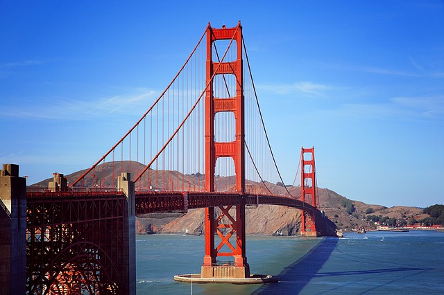
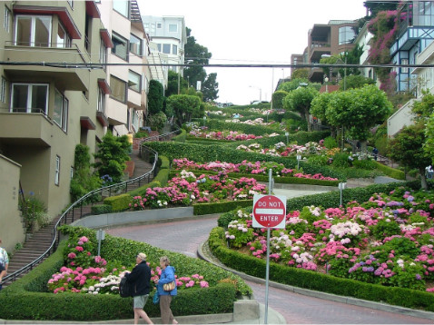

Run
The next exiting leg will be for our runners. The handoff will take place at Buckey Roadhouse just after crossing the bridge by Silva Island. Runners will enjoy a beautiful run continuing south along highway 101 and will even get to run accross the historic Golden Gate Bridge! Continue south with the 101 and continue on through Lombard Street. Head to Fisherman's Warf to hand off to the swimmers
